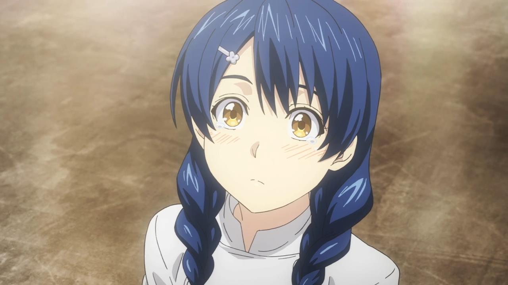

Megumi Tadokoro
About Megumi Tadokoro:
Megumi Tadokoro is the current 10th seat in the Totsuki Council of 10.
Megumi Tadokoro has long dark blue hair with two braided pigtails and wears
a flower hairpin on the right side of her hair.
Megumi Tadokoro is a 92nd Totsuki Generation student and she is a resident of
the Polar Star Dormitory.
Characteristics about Megumi Tadokoro:
Megumi is a clumsy, timid, thoughtful, kind and honest girl who
always speaks in a polite tone.
She is a nurturing sort of person, always looking out for others and
willing to assist them in any way that she can.
Although Megumi is a capable chef, she does not fare well under pressure
because she has stage fright.